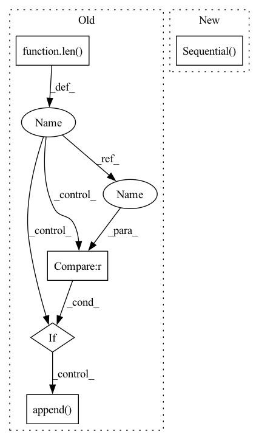

Pattern ID :3628
Before Change
if len(dims)<3:
print("get_mlp(): less than 2 layers!")
mlp = []
for i in range(len( dims) -1):
mlp.append(nn.Linear(dims[i], dims[i+1]))
if i<len(dims)-2 :
mlp.append( nn.ReLU())
if add_batchnorm:
mlp.append(nn.BatchNorm1d(dims[i+1]))
return nn.Sequential(*mlp)
After Change
for i in range(1, len(channels))
])
else:
return nn.Sequential( *[
nn.Sequential(nn.Linear(channels[i - 1], channels[i]), nn.ReLU())
for i in range(1, len(channels))
])
class LanguageEncoder(torch.nn.Module):In pattern: SUPERPATTERN
Frequency: 3
Non-data size: 5
Instances Fragment ID: 13662503
Project Name: mako443/text2pos-cvpr2022
Commit Name: 88c1c8af6aea88e3a9e528f30f519f4a6d1fbaef
Time: 2021-04-16
Author: manuel.kolmet@gmail.com
File Name: models/modules.py
M Class Name: AnonimousClass
N Class Name: AnonimousClass
M Method Name: get_mlp(2)
N Method Name: get_mlp(2)
M Parent Class:
N Parent Class:
M File Name: models/modules.py
N File Name: models/modules.py
M Start Line: 10
M End Line: 19
N Start Line: 21
N End Line: 30
Before Change
layers = []
current_size = feature_size[0]
current_channels = 1
for l_id in range(len( channels) ):
if l_id == len(channels) - 1 :
layers.append( nn.Sequential(
nn.Linear(int(current_size * current_size * current_channels), latent_dims),
))
else:
layers.append(nn.Sequential( // input shape (1, current_size, current_size)
nn.Conv2d(
in_channels=current_channels, // input heightAfter Change
self.fc = nn.Sequential(
nn.Linear(int(current_size * current_size * current_channels), latent_dims),
)
self.conv_layers = nn.Sequential( *conv_layers)
def forward(self, x):
x = self.conv_layers(x)
x = x.reshape((x.shape[0], -1)) Fragment ID: 13662504
Project Name: jameschapman19/cca_zoo
Commit Name: a67b4d1253acfaa0d8f3b544104e7f329d975239
Time: 2021-02-17
Author: james.chapman.19@ucl.ac.uk
File Name: cca_zoo/deep_models.py
M Class Name: CNNEncoder
N Class Name: CNNEncoder
M Method Name: __init__(8)
N Method Name: __init__(8)
M Parent Class: BaseEncoder
N Parent Class: BaseEncoder
M File Name: cca_zoo/deep_models.py
N File Name: cca_zoo/deep_models.py
M Start Line: 116
M End Line: 154
N Start Line: 114
N End Line: 158
Before Change
if len(dims)<3:
print("get_mlp(): less than 2 layers!")
mlp = []
for i in range(len( dims) -1):
mlp.append(nn.Linear(dims[i], dims[i+1]))
if i<len(dims)-2 :
mlp.append( nn.ReLU())
if add_batchnorm:
mlp.append(nn.BatchNorm1d(dims[i+1]))
return nn.Sequential(*mlp)
After Change
def get_mlp(channels, add_batchnorm=True):
if add_batchnorm:
return nn.Sequential(*[
nn.Sequential( nn.Linear(channels[i - 1], channels[i]), nn.BatchNorm1d(channels[i]), nn.ReLU())
for i in range(1, len(channels))
])
else:
return nn.Sequential(*[ Fragment ID: 13662505
Project Name: mako443/text2pos-cvpr2022
Commit Name: 88c1c8af6aea88e3a9e528f30f519f4a6d1fbaef
Time: 2021-04-16
Author: manuel.kolmet@gmail.com
File Name: models/modules.py
M Class Name: AnonimousClass
N Class Name: AnonimousClass
M Method Name: get_mlp(2)
N Method Name: get_mlp(2)
M Parent Class:
N Parent Class:
M File Name: models/modules.py
N File Name: models/modules.py
M Start Line: 10
M End Line: 19
N Start Line: 21
N End Line: 30
Before Change
)
fc_sizes = np.ceil(fc_sizes).astype(int)
fc_layers = []
for idx in range(len( fc_sizes) - 1):
fc_layers.append(torch.nn.Linear(fc_sizes[idx], fc_sizes[idx + 1]))
if idx < len(fc_sizes) - 2 :
fc_layers += [
torch.nn.Dropout(p=self._dropout),
torch.nn.ReLU(),
]
else:
fc_layers.append( torch.nn.Softplus())
if fc_layers:
self.head = torch.nn.Sequential(*fc_layers)
else:After Change
// else:
// self.head = torch.nn.Softplus()
self.dot = torch.nn.Sequential(
MLP(2 * self._embed_dim, 1, self._n_mlp_layers, self._dropout),
torch.nn.Sigmoid(),
)
// The optimizer and loss:
self.mse = torch.nn.MSELoss()
self.optimizer = torch.optim.Adam(self.parameters(), **kwargs) Fragment ID: 13662507
Project Name: wfondrie/depthcharge
Commit Name: ccf3d34d18f907802f0e4f3daab0845045df0390
Time: 2021-07-09
Author: fondriew@gmail.com
File Name: depthcharge/embedder/model.py
M Class Name: SpectrumTransformer
N Class Name: SpectrumTransformer
M Method Name: __init__(19)
N Method Name: __init__(19)
M Parent Class: torch.nn.Module
N Parent Class: torch.nn.Module
M File Name: depthcharge/embedder/model.py
N File Name: depthcharge/embedder/model.py
M Start Line: 88
M End Line: 163
N Start Line: 88
N End Line: 153